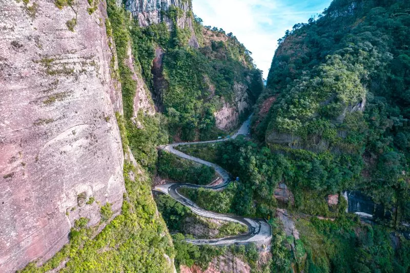
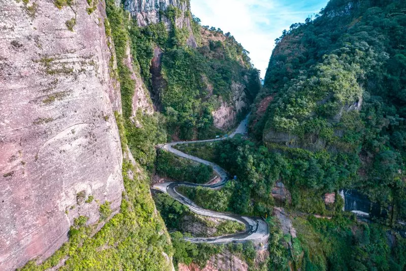

Urubici
Urubici é o mais belo destino da Serra Catarinense. Conhecida por suas belezas naturais; cachoeiras, cavernas, cânions e serras, tem como principal atração o Morro da Igreja, considerado o local mais frio do Brasil. Urubici despontou como principal destino da Serra Catarinense. Faz parte de um roteiro que inclui também, Lages, São Joaquim, Urupema e Bom Jardim da Serra, onde fica a espetacular Serra do Rio do Rastro. A cidade de Urubici fica num vale plano a 915 m de altitude, rodeado de montanhas. Nelas se espalham as belas atrações naturais, como o Morro da Igreja e a Pedra Furada, a 1822 m de altitude. Além dos pontos turísticos mais explorados e conhecidos, há muitos outros lugares para visitar em Urubici, que ficam em propriedades particulares, que aos poucos vão se tornando disponíveis para o turismo. O nome correto Urubici, é muitas vezes confundido com Ubirici, Uribici, Urubuci. esta confusão se dá com a troca das letras “U” e “I”.

 

Os principais pontos a se conhecer são Pedra Furada e támbem Cachoeira do Avencal
Pontos turísticos de Urubici:
- Serra do Corvo Branco
- Morro da Igreja
- Pedra Furada
- Cachoeira do Avencal
- Parque Sete Quedas
- Cânion do Espraiado
- Gruta Nossa Senhora de Lourdes
- Posto Serra Azul
- Igreja matriz de Urubici